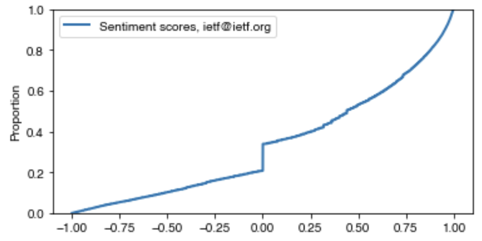
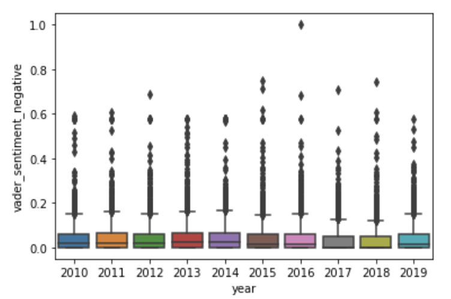
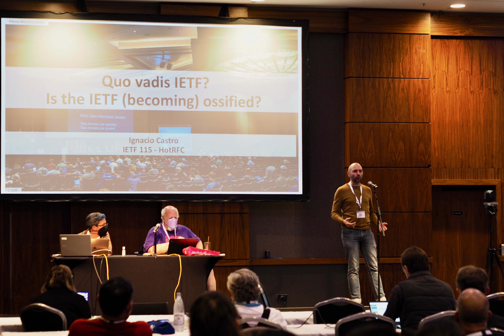

IETF 115 was held in London from 5th November through 11th November 2022, with members of the "Streamlining Social Decision Making for Improved Internet Standards" (sodestream) project taking part in activities throughout the meeting.
The focus of our work at the Hackathon was on analysing the sentiment of postings to the ietf@ietf.org mailing list. This mailing list provides a forum for the broad discussion of IETF-related topics. Sentiment analysis techniques could be useful in characterising the tone, and levels of toxicity, in the interactions that take place on this, and other, IETF mailing lists. With historical data, these trends can be tracked over time, providing insight into how the IETF community is evolving. The team managed to generate a dataset of sentiment scores, passing e-mail through the VADER library to understand if messages are broadly positive, negative, or neutral. In addition, they started to plot broad trends over time, and for individuals, and sketched out improvements to tooling documentation and packaging.

Distribution of VADER sentiment scores for all ietf@ietf.org postings

Distributions of sentiment scores for all ietf@ietf.org postings, within each year
There initial evidence of some interesting trends: relatively low levels of negativity, with more negativity on found on postings made on weekends and via person e-mail addresses, and relatively more positivity on Monday's. Broadly, however, the team found that sentiment analysis over technical text is difficult. For example, phrases like "dropped packets", "killed process", and "abort transmission" are neutral technical phrases that are scored negatively by the sentiment analysis library. It is essential to build up a lexicon of technical phrases to avoid misclassification.
Presentations

Ignacio Castro presenting a summary of our findings so far at IETF 115
Ignacio Castro presented a summary of our recent work to meetings of the Internet Engineering Steering Group (slides), the Working Group Chair Forum (slides), and the Measurement and Analysis of Protocols Research Group (slides, recording). These presentations highlighted our findings, including that conversations seem to be getting more complex, publishing is harder, and that the relevance of a minority of influential participants is growing. Our findings suggest that these are interconnected.
Proposed Research and Analysis of Standardisation Processes Research Group (RASP RG)
Finally, the team contributed to a meeting to discuss a proposal to form a Research and Analysis of Standardisation Processes Research Group within the IRTF. The meeting, led by Ignacio Castro and Niels ten Oever, highlighted the broad themes that relate to building an understanding of standardisation processes. These include understanding IP disclosure rules, barriers to participation, leadership dynamics, and decision making processes. The aim of the proposed group would be to improve our understanding of the development of standards-setting organisations, bringing together a community of researchers, practitioners, and standards developers and users. These themes and objectives align well with the core motivation of the sodestream project, and we look forward to contributing to the development of the group.